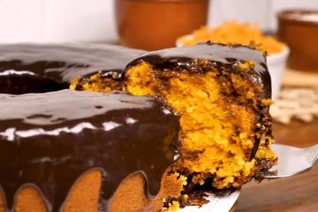

Bolos e Tortas | Carnes | Aves | Peixes | Saladas | Sopas

Em um liquidificador, adicione a cenoura, os ovos e o óleo depois misture Acrescente o açúcar e bata novamente por 5 minutos Em uma tijela ou na batedeira, adicione a farinha de trigo e depois misture novamente Acrescente o fermento e misture lentamente com uma colher Asse em um forno preaquecido a 180°C por aproximadamente 40 minutos.
Despeje em uma tijela a manteiga, o chocolate em pó e o açúcar, depois misture Leve a mistura ao fogo e continue misturando até obter uma consistência cremosa, depois despeje a calda por cima do bolo.